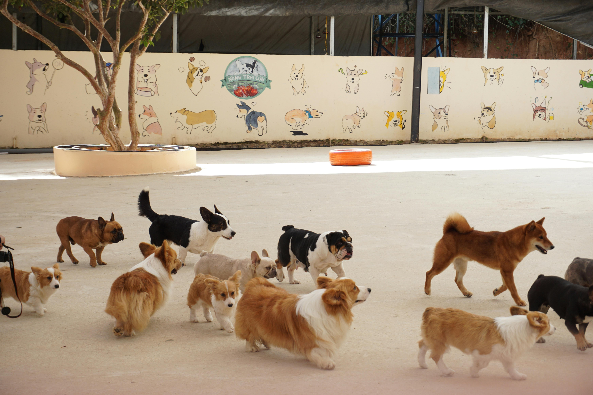
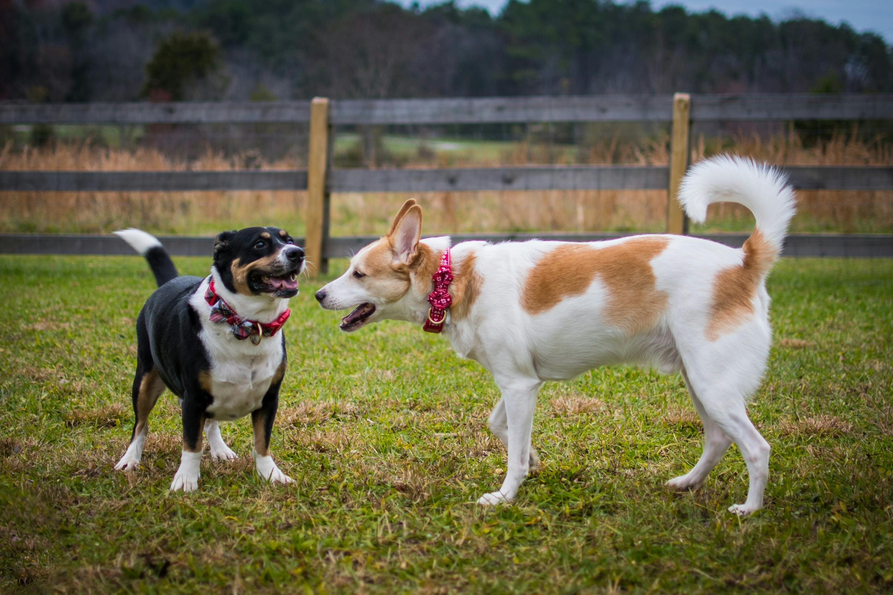
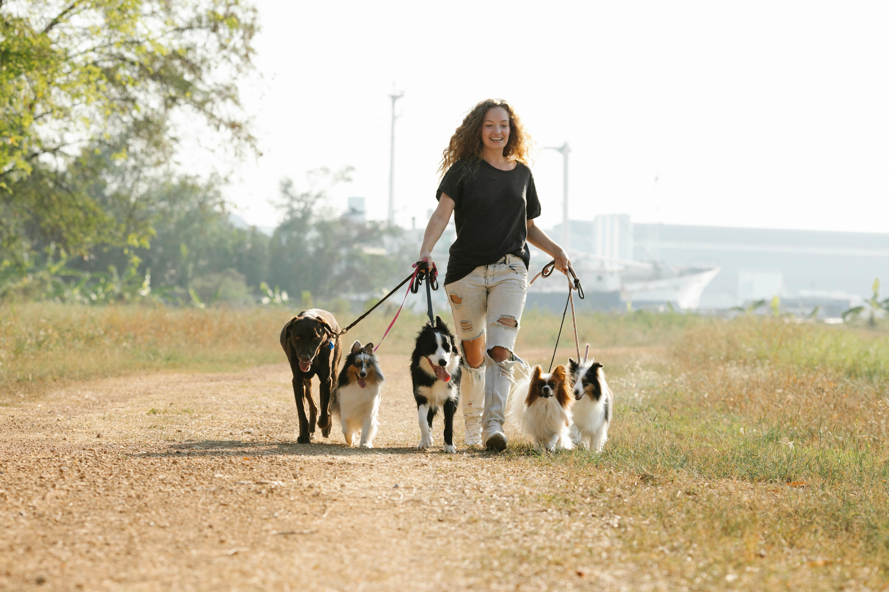

Daycare Services

DAYCARE
A FUN & SAFE ENVIRONMENT FOR YOUR PET
At WhiskerWash, we know that pets are family. That's why we offer professional daycare services to ensure your furry friend gets the exercise and attention they deserve.
Our daycare is a supervised, fun-filled environment where your pet can play, socialize, and relax while you're at work or away.
Regular daycare help maintain a healthy weight, prevent boredom, and reduce anxiety in pets. Our daycare staff are trained to handle dogs of all breeds and temperaments, ensuring their safety and comfort during every day.
Every daycare includes fresh water and meals, so you can rest assured your pet is well-cared for while you're away.
OUR DAYCARE SERVICES INCLUDE:
1. SUPERVISED PLAYTIME
Whether your dog prefers a brisk walk around the block or a leisurely stroll in the park, our experienced walkers tailor each walk to their individual energy levels and preferences. We ensure they get the perfect amount of exercise to keep them happy and healthy.
2. HEALTH & WELLNESS CHECKS
Your pet's safety is our top priority. Our staff are trained to handle dogs of all breeds and temperaments, ensuring a secure and positive experience. We provide a safe and secure environment for your pet.
3. FLEXIBLE SCHEDULING
We offer flexible scheduling options to accommodate your needs. Whether you need full-day or half-day care, we can create a plan that works for you and your pet.
4. QUICK CLEAN-UP & HYDRATION
Our facility is designed to keep your pet safe and comfortable. We have separate play areas for large and small dogs, ensuring they can play with dogs of similar size and energy levels.
5. PHOTO UPDATES
Receive photo updates during the walk to see your pet enjoying their adventure. These snapshots capture their happy moments and ensure you stay connected while you're away.



Why Choose Us?
• Professional Caretakers:
Our team of skilled and experienced caretakers is dedicated to providing top-notch care for your pets. Trained to handle all breeds and temperaments, they ensure a safe, gentle, and stress-free daycare experience tailored to your pet's unique needs.
• Safe & Secure Environment:
Your pet's safety is our top priority. Our staff are trained to handle dogs of all breeds and temperaments, ensuring a secure and positive experience. We provide a safe and secure environment for your pet.
• Health & Wellness Checks:
Your pet's safety and well-being are our top priority. Our trained staff monitor your pet's behavior throughout the day, looking for any signs of discomfort or health concerns. We provide regular updates and ensure your pet stays happy, healthy, and comfortable during their time with us.